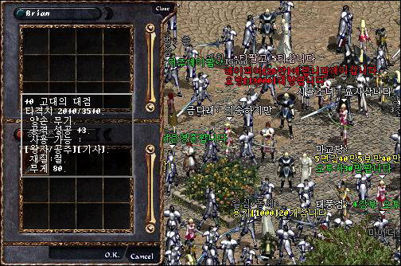

|
2002年8月20日
考你眼光！誰是PvP王四連環競猜大賽首天報告
以下內容截至2002年8月20日上午11:30：
各PvP參賽者人氣指數：
| 王族 |
人氣指數 |
妖精 |
人氣指數 |
騎士 |
人氣指數 |
法師 |
人氣指數 |
| 1. PT1 |
14% |
5. 諸星 |
20% |
9. 燄影 |
24% |
13. 靈羊 |
25% |
| 2. 藍燄 |
42% |
6. 登圖貝勒 |
25% |
10. Tataka |
12% |
14. TheGod |
19% |
| 3. 月之宿命 |
44% |
7. Kissmehk |
22% |
11. 疾風之邊 |
52% |
15. Drake |
45% |
| 4. 小小的王子 |
0% |
8. 三井壽14號 |
33% |
12. HKlwc99 |
13% |
16. 魔之使徒 |
11% |
從人氣指數可見王族的首二名2.藍燄及3.月之宿命的競爭最為激烈！而妖精方面則較平均，8.三井壽14號暫時領先；騎士及法師分別由11.疾風之邊及15.Drake一馬當先！
以下為目前已經參加了的玩家名單：（截至2002年8月20日上午11:30，共95人）
血霸
CTN
小野申二
樂星
傻豬豬娜娜
大地之劍
黑虎刃
LARSON
Jackyman
ElfArcher
Szesze33
Szesze
阿遊
天一雄太
艾仔仔
X龍騎士X
紅孩兒
StarSea
冰川藍
卡斯 |
魔界銀騎士
S珊S
鬼峰
奪愛
雷炎騎士
拉迪比
2打6妖精
神皇天子
CrAzYwOmEn
炎之勇士
大隻老阿頭
TeRs
To9
狂邪亞心
謝夫
風之吹雪
地武神
淚風
Elernal
金金騎 |
周亞夫
Libra
五島小馬
易天行
CK女
紫凌雲
火之獵人
高路斯
亞伯法師
一墮落天使一
嘉美由
蒼燕
終結者JOKER
死太郎
重生一皮皮
熱血小騎
青娃
阿冬囉
九龍小子
傻瓜雨夜 |
傻瓜妖精
超級騎士仁
我係豪豪
迷途妖精
吸寶神騎
勝利之光
一冬日一
億仔
Arrest
雅樂ADA
Oo陳慧琳oO
天龍魔術師
DARK仔
影之嵐
張德仔
StormMax
Independent
乂卡比乂
路人夾
阿魯巴斯 |
卡斯守護神
受罰法師
魔月影
泰利嘉
魔法組織會長
0003
芽菜仔
海若鷹
海之力量
人類妖精
WhyHenry
Giba
X一人一X
小佑
卡頓買水專用
|
遺忘之島20/35的武器！
來源：Lineage Playforum (2) (3) (4)
英文翻譯：Lineage Compendium
中文翻譯：天堂．真相

解封後的古代之刀：20/35，雙手，+3攻擊命中，王族、騎士可用，材質：鐵，重量：80，他們嘗試使用武卷，但並沒有任何事情發生，因此應該是不能加武的。（其平均傷害為10.5/18，而+9巨斧為14.5/17.5，對大怪的傷害差不多而已，有點兒失望）
解封後的古代盔甲：防-14，王族專用，材質：龍鱗，重量270，與解封後的古代金屬盔甲一樣都不能加防，在使用防卷後會沒有任何事情發生，不會爆，也不會有加成。
解封後的古代十字弓：3/3，單手！攻擊命中+2，妖精專用，材質：木，重量：50，安定值為6，單手弓重出江湖！
韓國測試伺服器8月19日更新內容
原文：韓國天堂官方網站公告
英文翻譯：Lineage Compendium
中文翻譯：天堂．真相
1. 歐瑞的活動完結，那裡替大家變身、使用魔法等NPCs已經移除了。
2. 在殺等級10或以下的玩家時，不會得到任何經驗值。
3. 在死亡時會準確地掉下10%經驗值，假如你的等級大於44，所跌的經驗會由等級45開始每多一等級跌少1%經驗值，直至等級49，之後的等級皆是會跌5%經驗值。（即是Lv11-Lv44掉10%，Lv45 9%，Lv46 8%，Lv47 7%，Lv48 6%，Lv49+ 5%）
4. 修正了以下錯誤：
- 邪惡的玩家在死亡後不一定會在燃柳村出現。
- 假如你用空手／腳攻擊其他玩家，你會變為紫名。
- 當你殺死了其他正義或中立的玩家，然後被守衛殺死了一次後，守衛不會再攻擊你。
- 相消術不會解除召喚或迷魅。
本網收到了香港官方對於本網的投訴
今天本網收到了香港官方人員對於本網的投訴電郵，內容如下：
首先，本網要回應的是本網在回應官方澄清水龍被鎖一文中從來沒有直接指出水龍被官方鎖了，同時在報導Lineage Snowball有抄襲某遊戲之嫌一文中亦沒有直接說出Lineage Snowball是抄襲某遊戲的。在以上兩文中，本網是先列出合理的論據，如在水龍一文中提出伺服器在"在維修後，首領重生時間是重新計算的"的論點去反駁香港官方"由於水龍在短時間內隨機出現了多次並且被擊倒，故在隨後數日內水龍隨機再出現的頻率會相應降低"的論點；而其後則舉其他伺服器的實例，去說明即使水龍被鎖了亦不是新的個案；而在Lineage Snowball一文中，本網則提出某隻幾年前的遊戲和現在Lineage
Snowball玩法相若。本網在提出合理論據後，便將結論留給瀏覽者判斷，本網並沒有下任何結論，因此絕對沒有抵觸任何誹謗成份。至於水龍是否真的被鎖？Lineage Snowball是否抄襲某遊戲概念？香港官方是否此地無銀三百兩？請大家自行判斷 ^^ 如果香港官方覺得本網的論點有問題的話，我們是絕對歡迎他們提出合理論據去反駁我們的論點。
最後，本網希望香港官方知道香港是一個有自由開放的社會，希望他們能夠尊重言論自由，並且接受正面和負面的聲音，將自己不善之處加以改進，這樣可能滿足廣大玩家的需要！
PS: 本網報導香港官方負面消息不足全部新聞的0.5% |